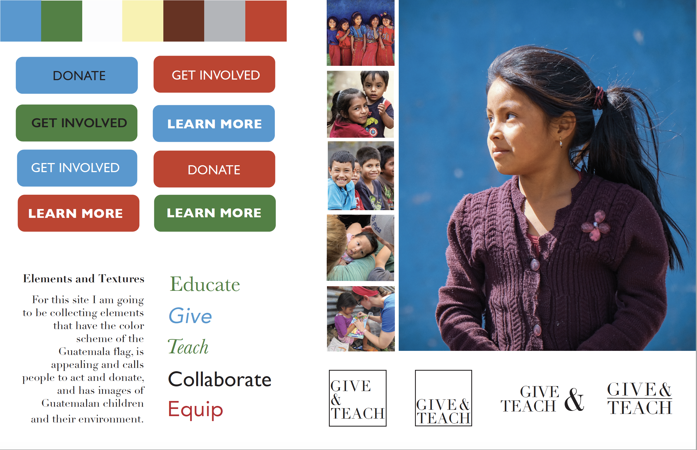
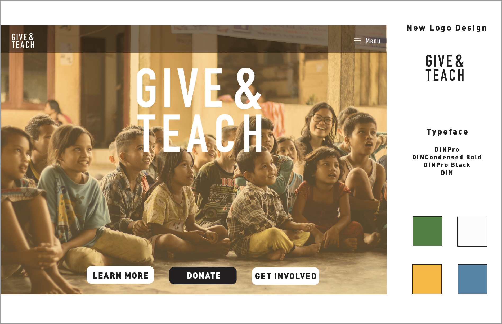

Updated Website
Give and Teach is an organization dedicated to helping children in underprivledged villages in Guatemala.
Style Tile Part 1
In my original style tile I was still experimenting and playing around with color schemes and images. I was keeping with Give and Teach's original theme of formality and professionalism.
Style Tile Part 2
In my final style tile I changed the overall feel of the website to a more childish feel, with elements of professionalism. I narrowed down my color scheme and changed my typeface to DIN.